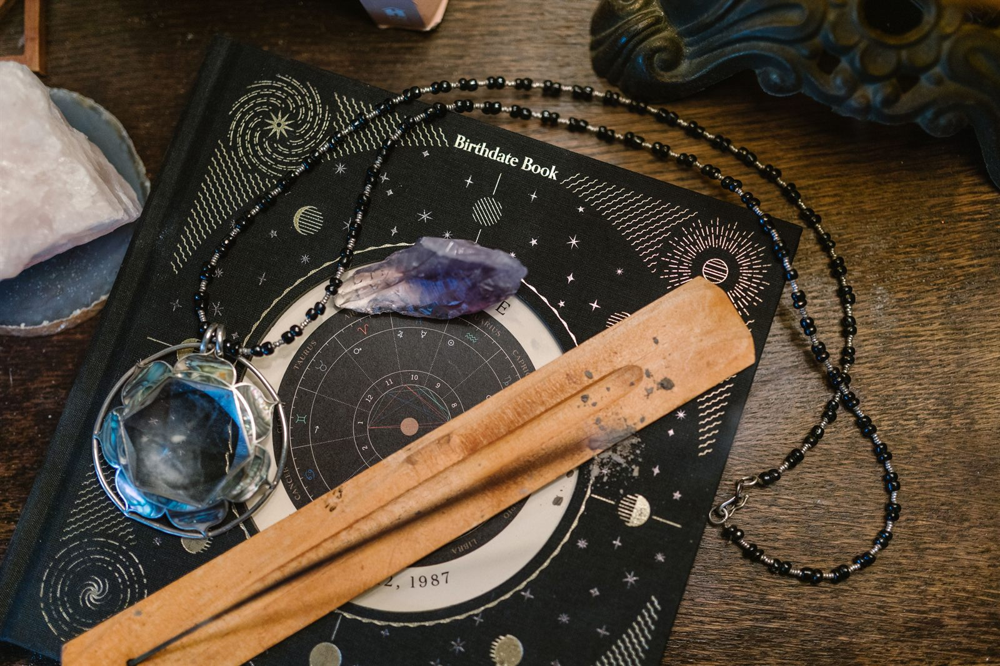

Dacă ai așteptat vreodată o Lună Plină ca să-ți încarci cristalele sau să faci o vrajă de manifestare, practici deja magie astrologică. Pentru vrăjitoarele și practicienii magiei de azi, astrologia nu înseamnă doar să citești o hartă natală ca să afli de ce ești încăpățânat sau emotiv. Este un instrument foarte practic, folosit pentru a alege momentul vrăjilor, a alinia intențiile și a te conecta la „vremea” energetică a cosmosului.
Magia planetară: energia împrumutată de la zei
- Venus (iubire și frumusețe): Vrăjile pentru romantism, iubire de sine și prietenie se fac adesea vinerea (ziua lui Venus, cum o spune chiar numele ei) sau când Venus are o poziție puternică pe cer. Practicienii pot folosi obiecte asociate cu ea, precum cuprul, cuarțul roz și florile de măr.
- Marte (acțiune și protecție): Ai nevoie să alungi energia negativă, să pui o limită fermă sau să-ți faci curaj pentru un pas mare? Marte guvernează ziua de marți, care îi poartă numele. Vrăjile făcute sub influența lui Marte sunt rapide, înfocate și protectoare.
- Mercur (comunicare și intelect): Miercurea, care îi poartă și ea numele, îi aparține lui Mercur. Este momentul ideal pentru ritualuri legate de examene, semnarea contractelor sau lămurirea neînțelegerilor încăpățânate.
- Jupiter (noroc și expansiune): Jupiter este Moș Crăciunul cosmic. Ritualurile de joi (ziua lui Jupiter, numit în latină și Jovis), dedicate bogăției, belșugului și avansării în carieră, se conectează la energia expansivă a lui Jupiter ca să amplifice rezultatele.
Calendarul vrăjitoarei: fazele Lunii și zodiacul
Luna funcționează ca o lupă cosmică uriașă, iar urmărirea fazelor ei este abecedarul astrologiei pentru cei mai mulți practicieni. Luna în creștere este folosită pentru vrăjile care „atrag”, cum ar fi cele pentru bani sau pentru o iubire nouă. Luna în descreștere e păstrată pentru vrăjile care „alungă”, precum renunțarea la obiceiurile proaste sau îndepărtarea situațiilor toxice. Luna Neagră este de obicei un timp pentru odihnă profundă, lucru cu umbra și divinație.
Dar lucrurile merg și mai departe: zodia prin care trece Luna îi dă vrăjii aroma ei aparte. De exemplu, o Lună Plină în Taur, zodie de pământ, e perfectă pentru vrăji de bani și lucrări de împământare, în timp ce o Lună Plină în Scorpion, zodie de apă, e ideală pentru vindecare emoțională profundă, lucrul cu strămoșii sau transformări intense.
Magia electivă: totul ține de moment
Practicienii avansați folosesc o tehnică numită astrologie electivă. În loc să se uite doar la Lună, ei cercetează întregul cer ca să aleagă momentul perfect, calculat cu precizie matematică, pentru a lansa o afacere, a face o vrajă importantă sau a crea un talisman planetar. Este, în esență, surfing pe valuri cosmice: în loc să vâslești împotriva curentului, aștepți ca universul să te împingă exact acolo unde vrei să ajungi.
Surse
- Thrice Round: “Astrology 101: How the Stars Influence Our Magick”
- College of Psychic Studies: “Unlocking the Power of Planetary Magick”